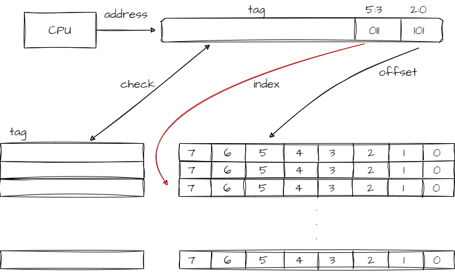
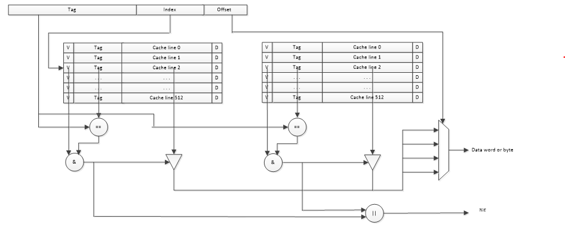

Cache-直接映射缓存&多路组连缓存
本文最后更新于：2023年10月29日 晚上
- 参考
- https://zhuanlan.zhihu.com/p/102293437
- 公众号：老秦谈芯
- 《计算机组成与设计 第五版》 ***
1. Cache line
- cache size：这里只考虑cache可以缓存最大数据的大小。这里忽略了tag和valid bit的占用。
- 将cache均分相等的块，每一块称为cache line，现在的硬件设计中，一般cache line的大小为4-128字节，cache line做的太小会导致tag资源占用过大。
- cache line 是 cache 和主存之间数据传输的最小单位。
- 考虑到程序的空间局部性：即一个数据被访问了，那么它周围的数据在之后也有可能被访问。所以cache会选择连续一段数据公用一个tag，一起被传输。
- 在cache缺失时，即使CPU只需要从主存中读1个字节的数据出来，但是还是会直接load出8（该值为设定的cache line大小）个字节填充整个cache line。
- Cache line size 的选择
- size指的是offset的大小，也就是Cache line的容量。
- size增大，失效率一般会下降（更大程度的挖掘空间局部性）。
- 但是当Cache line
size占cache容量比例增加到一定程度，失效率会随之上升。原因如下：
- 上面所描述的情况会导致Cache中可存放的cache line数变少了，会导致数据经常被挤走。
- cache line的size不断增大，导致各字之间的空间局部性也会降低，失效率的收益不断减小。
- 失效损失增大，失效损失主要指从主存中读取数据并加载到cache的时间，size不断增大，导致传输时间也不断增大。
2. Cache控制器怎么确定是否命中
- 首先假设cache 大小为64Bytes，cache line大小为8Bytes。假设CPU想从地址为0x0654地址取一个字节数据。
- 考虑cache line大小为8Bytes，使用地址低3bit来寻址其中的一个字节。(offset[2:0])
- 计算可得有8个cache line，可以使用3bit地址来寻址是哪个cacheline。(index[5:3])
- 对于一个地址，即使确定了[5：3]bit，也不能就确信找到了正确的地址，还有更高位数信息。
- cache将高位信息用tag表示， tag、index、offset可以确定唯一的那个地址。
- 检查是否命中：首先根据index找到cacheline，然后将cache的tag与地址的tag比对，如果相等，说明命中，如果不等，说明缺失。

- valid bit
- tag 前面还加了一位valid bit，首先判断该位，判断缓存中的数据是否有效，若无效不用判断是否命中，直接缺失。
- 目的：考虑一些情况如：处理器刚启动时，cache中没有有效数据，对比是无用的。以及运行过程中，cache的一些cacheline可能还是空的，对比也是无用的。
- Cache 失效的处理
- 这里以指令Cache失效为例。
- 对于按序处理器，Cache失效，需要停顿流水线等待内存返回数据。
- 对于乱序处理器，Cache失效，在等待cache失效处理时允许继续执行指令，更为复杂，这里暂不讨论。
- 将PC值-4发送给内存。
- 考虑到程序计数器是在执行的第一个时钟周期递增的，所以引发指令Cache失效的指令地址等于当前PC-4。
- 对主存进行读操作，等待主存完成本次访问。
- 写Cache line，将内存获取的数据写入，将高位填充到tag字段，将有效位拉高。
- 重启指令执行，重新取指，此次取指将会在指令cache中命中。
- 对于按序处理器，Cache失效，需要停顿流水线等待内存返回数据。
- 数据Cache控制本质和上面相同，失效也需要短暂的暂停处理器，直到内存返回数据给Cache。
- 这里以指令Cache失效为例。
3. 直接映射缓存的优缺点
- 优点：硬件设计更简单、成本低。
- 缺点：cache thrashing（cache 颠簸）
- 与上面假设相同，此时cpu想依次访问0x00，0x40，0x80地址的数据，这三个对应的index和offset都是一个，唯一区别是tag值。
- 访问0x00时，cache缺失，cpu从主存中load出8个字节大小的数据填充cache line。
- 访问0x40时，索引到第0行cacheline，但这里存的是0x00对应的数据，仍缺失，再加载0x40地址的数据。
- 依次类推，0x80也要经过刚才两步：缺失+从主存中load。
- 这样cache对性能没什么提升。
- 为了解决这个问题，引入了多路组相连缓存。
4. 两路组相连缓存
- 假设cache 大小为64Bytes，cache
line大小为8Bytes。假设CPU想从地址为0x0654地址取一个字节数据。
- 一共有8个cache line，将一路改成两路4个cache line。
- offset依然是3bit，index只需要2bit即可。
- 找到某行index，对应两个cache line。然后将两个cache line对应的tag与地址部分的tag进行对比。
- 下图中，Tag的比较和Data
SRAM的数据读取是并行的，可以增加cache读取速度。
- 也可以串行，先比较Tag，再根据Tag比较结果去访问Data SRAM。

- 缺点
- 硬件成本更高，每次比较tag要比较多个cacheline对应的tag。
- 优点
- 可以降低cache颠簸可能性。前面提到的问题，0x00和0x40可以被加载到不同的路中。
5. 全相连缓存
- 取消index信号，每个cache line占一个way。其实就相当于不考虑offset的3bit，其余地址一个一个放在表中的一条一条上，在这个表里挨个查，显而易见只适合小容量的cache。
- 此时查找是否命中，需要将地址的tag与所有组的tag进行比较。
- 因为不存在index，任意数据可以存在任意位置，可以最大程度降低cache的颠簸性。
- 硬件成本最高。
Cache-直接映射缓存&多路组连缓存
http://binbinqian.cn/2023/10/29/Cache-直接映射缓存&多路组连缓存/